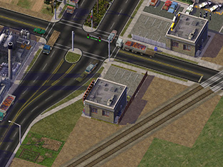

感谢您下载适用于SimCity 4 豪华版（或尖峰时刻扩展版）的 Network Addon Mod（NAM）。 NAM是一个非常全面的交通系统模组，向游戏中添加了相当于多个扩展包的新交通系统内容。 它除了修复游戏的交通模拟器和基础交通网络功能外，它还为现有交通网络工具添加了无数新功能， 例如新的立交桥，高速公路入口，交叉路口，拓宽的道路，商业步行街/人行道，可拖动的地面轻轨，环岛和转向车道等许多其他功能。
请注意，本文档仍处于过渡状态，某些链接可能引用了较旧但仍具有重要意义的文档。
基础使用
功能指南
- 交通模拟器的改善
- 汽车/AI（Automata）插件文件
- 数据面板插件文件
- 基础交通网络扩展 [WIP]
- 转向车道
- 环岛
- 真实铁路（RRW）和可拖动的高架铁路
- 道路拓宽模组(NWM)
- 真实高速公路(RHW)
- 商业步行街(PedMall)
- 高铁(HSR)
- 街道扩展模组(SAM)
- Maxis高速立交(MHO) [Old PDF]
- 车站 [Old PDF]
该Mod由用户完全自行下载，安装和运行，用户需要承担一切风险带来的后果。游戏的创建者EA及其个人参与者对于该Mod的任何错误，崩溃，问题或任何其他问题（如果您已将此Mod文件下载并应用到游戏中）不承担任何责任。 玩家仍然需要知悉，如果您已下载此mod并将其应用于游戏，则将来任何补丁程序和/或扩展包以及SimCityscape可能无法在游戏中正常运行。 要使用本文档，其中的信息以及Network Addon Mod，用户必须接受本免责声明以及本文档中的所有内容。
首先要感谢SC4爱好者网站的管理员，感谢他们创建并管理他们的网站，以使其网站成为一个充满活力的SimCity 4社区。 没有它们，这将是不可能的。 非常感谢整个Simtropolis Modd Squad以及以当前形式为Network Addon Mod做出贡献的Simtropolis的所有成员。
Simtropolis为NAM团队（及其前身Modd Squad）提供了非常重要且必要的工具，用来创建此Network Addon Mod的内容。没有Simtropolis，这个mod根本就不存在。
SimCity 4在首次发布后的14年里仍然表现强劲，随后出现了许多新网站，其中最著名的是SC4Devotion和German SimCityPlaza，它们从一开始就一直为NAM团队提供支持。
虽然所有的mod和网站维护都是自愿完成的，但网页服务器并不是免费的。如果您部分或全部喜欢并欣赏此Mod，请考虑向其中一个网站捐款，以帮助抵消运营该网站的费用。